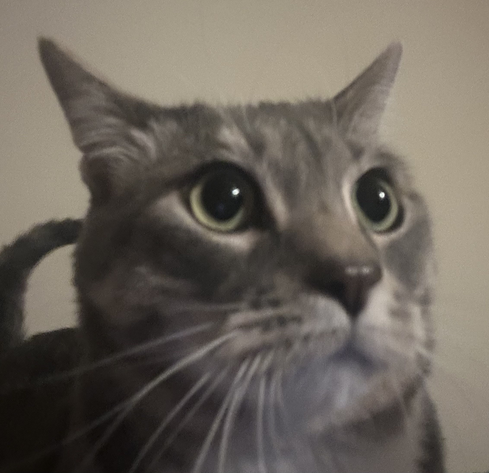

Olivia Velte
email ·
github ·
linkedin

Hello! I'm currently working on a project through Bluedot's Technical AI Safety Sprint. In my free time I enjoy reading, writing, and petting my cat Ollie.
Experience
- BlueDot courses: AGI Strategy, Technical AI Safety, Technical AI Safety Project Sprint (running July 16 - August 13)
- M.Sc. AI for the Biosciences, Distinction, Queen Mary University of London (2025)
- B.A. Neuroscience, Boston University (2024)
- Worked in Neuroscience research for ~3 years @ Boston University School of Medicine (specialized in cognition of decision-making and mPFC reward circuitry)
Independent AI Safety Research
*Most of these are neuro-inspired, just a fun way to be creative as I learn safety research techniques, I'd like to be involved in higher-leverage projects in the future
- CoT Faithfulness Degrades Where Human Deliberation Would Too: Motivated by the finding that prefrontal deliberation is most vulnerable to motivated inference under ambiguity (where slower goal-directed reasoning competes with a faster incentive-driven response), tested whether chain-of-thought degrades the same way under incentive pressure. Using a step-perturbation paradigm across 30 closed-form and 20 defeasible reasoning problems, found a clean double dissociation (gap +0.103): reward-salient framing left CoT faithfulness intact on closed-form problems but selectively degraded CoT–answer consistency on defeasible ones, with the largest drops in risk assessment and probabilistic forecasting.
- Sycophancy as a Variable Reward Signal: Building on the neuroscience that the unpredictability of reward drives the strongest conditioning, designed a Response Variability Index (RVI) Shannon-entropy measure of how predictably frontier models agree with users across semantically equivalent prompt clusters. Found 30.4% of Mistral's clusters fall in the variable-ratio regime (the schedule structure most associated with habit formation and resistance to extinction) versus 14.3% for Claude, framing sycophancy as a training-shaped propensity.
- Neural population stress-test of ARC's presumption of independence: Stress-tested a key Alignment Research Center AI-safety estimation assumption and found independence failures scale with circuit size and peak at decision boundaries, grounding the problem in 25 years of cortical neuroscience data.
- Predicting AI Dependency: Tested whether the goal-directed→habitual transition (striatal dopamine shifting control from deliberate, outcome-sensitive engagement to cue-driven responding) leaves a linguistic fingerprint detectable before dependency behavior consolidates. Extracted lexical, pragmatic, and session-level features from +12k WildChat-1M users; high-dependency users were distinguishable from their earliest sessions via colloquial register, faster return intervals, and resistance to refusals (AUC 0.712).
Non AI safety Research:
- MSc Thesis: An NLP-Based Framework for Hypothesis Generation and Validation of Neural Circuit–Cancer Relationships. Olivia Velte, Dr. Mohamed Elbadawi
- Alpha-2 adrenergic agonists reduce heavy alcohol drinking and improve cognitive performance in mice. Quadir, S.G., Lepeak, L., Miracle, S., Collu, R., Velte, O., He, Y., Ozturk, Z., Rohl, C. D., Sabino, V., & Cottone, P. (2026). eNeuro, https://doi.org/10.1523/ENEURO.0368-25.2026
- The Alpha2 Adrenergic Agonist Guanfacine Attenuates Chronic Alcohol-Induced Temporal Order Memory Deficits in Mice. O. Velte, P. Cottone, V. Sabino, [poster] for UROP (2023)
Drop a book recommendation :)